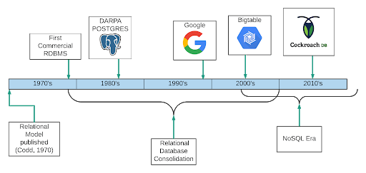

Recently I've developed a love of databases. Not just the data they hold, but the structure, the language they're written in, how the data can be manipulated, and the amount of database services that exist. I found this love back in 2021, during a cyber security internship at P&G. While it was a cyber security internship, most of the work was focused on manipulating data in Excel and creating KPI's using PowerBI. In 2022, I switched majors from cyber security to business analytics, and then to a double major in BANA and information systems.
Databases are essential for storing, managing, and accessing data, as I learned in my database design class last year. They allow users to manipulate and retrieve data to answer specific questions, provided the data exists within the database. Computer databases have been in use since the 1960s, but their popularity surged in 1970 when Edgar Codd of IBM published a landmark paper introducing the concept of organizing data into cross-linked tables. This led to the rise of commercial databases, with Oracle launching the first one in 1979.
Since then, databases have evolved from traditional relational models to include NoSQL solutions, designed for handling unstructured data and large-scale applications. Today, databases are the backbone of everyday systems like social media, e-commerce, and banking, ensuring seamless data transactions and real-time access. They continue to evolve, driven by the demand for faster, more dynamic data management solutions.
There are two types of databases that I know of, relational databases and NoSQL databases. Relational databases and NoSQL databases serve different purposes and data models. Relational databases, like MySQL and PostgreSQL, organize data into structured tables with defined relationships, using SQL to query and manage data. In contrast, NoSQL databases, such as MongoDB , handle unstructured or semi-structured data, offering more flexibility by storing information in documents, key-value pairs, or graphs without predefined schemas
| Feature | Relational Databases | NoSQL Databases |
|---|---|---|
| Data Model | Structured wth predefined relationships | Flexible, stores data as documents, graphs, or columns |
| Query Language | SQL | Varies |
| Schema | Fixed schema | Schema-less or flexible schema |
| Scalability | Vertical scaling | Horizontal scaling |
| Examples | MySQL and Oracle | MongoDB and Cassandra |
As someone who uses Discord, and is in the process of using Python to make a bot, one of the databases I've had to work with is MongoDB . MongoDB is really useful for verification of members and managing members. In order to verify members trying to join a server there has to be a database. The database, specifically the servers collection, where the server specific data is stored. The python code I'm working on creates, updates, and deletes server-specific data in MongoDB , including role IDs, premium status, and logging webhooks. It also stores verification data to track how many users have been verified. Because MongoDB is NoSQL, python code works just fine to code it.

In contrast, Oracle is a relational database. You code using SQL to create tables and relationships, as well as manipulate and query the database. I've only worked using Oracle during one class learning the different queries you can use to get information from the database as well as learning how to structure the database. In my personal opinion, while I find coding in SQL enjoyable and easy, I do enjoy the ease of working with NoSQL.
As the demand for scalability and performance grows, emerging database technologies, such as NewSQL and multi-model databases, are blending the consistency and reliability of relational models with the flexibility and scalability of NoSQL, offering the best of both worlds for today’s complex data environments.
When looking at databases, one of the things I've always been curious about is how bookstore and library databases work. I've always wanted to work at a bookstore and would love to combine my love of databases with my love of reading books. Now I work at a library and while I don't get to work with the databases I do enjoy learning about them.
From what I've learned so far a library database several key elements must be managed, including inventory of books, what library has what book, who has a book on hold, when is the book due, is the book overdue, etc. A relational database is well-suited for handling structured data like patron details, book information, and check out history, where relationships between entities are important. This type of database ensures that information like book availability and user borrowing history is consistent and easily retrievable. Additionally, features like tracking overdue books, sending automated reminders, and managing interlibrary loans rely on the relational structure to keep operations smooth and efficient.
However, libraries increasingly generate large amounts of unstructured data. Such as digital copies of books, and multimedia content like audiobooks or movies. This is where NoSQL would be perfect to handle flexible and growing data. Using a hybrid approach that combines relational databases for structured data and NoSQL for unstructured data allows the library to manage both efficiently.
I do know that we use a website that use network based access control. Meaning only certain computers with admin access can access the database. The way to access the database is with a simple web application that allows users to simply type in the information they want instead of coding using SQL. I want to assume the database is using a combination of server side and client side code, such as using Python with Vue.js. It could also be using a myriad of other coding languages to accomplish this.
Scalability is also a key factor, especially as libraries expand their digital offerings and membership. A hybrid system ensures the library database can scale to accommodate growing user demand, maintain performance during peak periods, and handle large data sets without compromising speed or reliability.